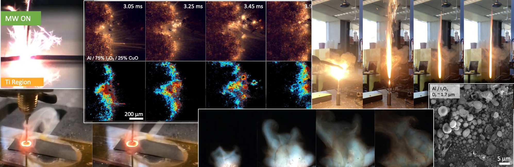

Publications

- R.J. Jacob, D.J. Kline, M.R. Zachariah, High speed 2-dimensional temperature measurements of nanothermite composites: Probing thermal vs. Gas generation effects, J. Appl. Phys. 123 (2018) 115902. doi:10.1063/1.5021890.
- H. Wang, D.J. Kline, M. Rehwoldt, M.R. Zachariah, Ignition and Combustion Characterization of Ca(IO3)2-based Pyrotechnic Composites with B, Al, and Ti, Propellants, Explos. Pyrotech. 43 (2018) 977–985. doi:10.1002/prep.201800041.
- P.M. Guerieri, R.J. Jacob, D.J. Kline, A. Kerr, D. Mayo, E.E. Foos, M.R. Zachariah, Triisobutylaluminum additive for liquid hydrocarbon burn enhancement, Combust. Flame. 200 (2019) 53–59. doi:10.1016/j.combustflame.2018.09.023.
- H. Wang, M. Rehwoldt, D.J. Kline, T. Wu, P. Wang, M.R. Zachariah, Comparison study of the ignition and combustion characteristics of directly-written Al/PVDF, Al/Viton and Al/THV composites, Combust. Flame. 201 (2019) 181–186. doi:10.1016/j.combustflame.2018.12.031.
- Y. Qiao, S. Xu, Y. Liu, J. Dai, H. Xie, Y. Yao, X. Mu, C. Chen, D.J. Kline, E.M. Hitz, B. Liu, J. Song, P. He, M.R. Zachariah, L. Hu, Transient, in situ synthesis of ultrafine ruthenium nanoparticles for a high-rate Li–CO2 battery, Energy Environ. Sci. 12 (2019) 1100–1107. doi:10.1039/C8EE03506G.
- H. Wang, D.J. Kline, M. Rehwoldt, T. Wu, W. Zhao, X. Wang, M.R. Zachariah, Architecture Can Significantly Alter the Energy Release Rate from Nanocomposite Energetics, ACS Appl. Polym. Mater. 1 (2019) 982–989. doi:10.1021/acsapm.9b00016.
- H. Wang, J. Shen, D.J. Kline, N. Eckman, N.R. Agrawal, T. Wu, P. Wang, M.R. Zachariah, Direct Writing of a 90 wt% Particle Loading Nanothermite, Adv. Mater. 31 (2019) 1806575. doi:10.1002/adma.201806575.
- P. Ghildiyal, Y. Yang, D.J. Kline, S. Holdren, M.R. Zachariah, Ultrafast, scalable laser photothermal synthesis and writing of uniformly dispersed metal nanoclusters in polymer films, Nanoscale. 11 (2019) 13354–13365. doi:10.1039/C9NR02839K.
- H. Wang, D.J. Kline, M.R. Zachariah, In-operando high-speed microscopy and thermometry of reaction propagation and sintering in a nanocomposite, Nat. Commun. 10 (2019) 3032. doi:10.1038/s41467-019-10843-4.
- Y. Yao, Z. Huang, P. Xie, T. Li, S.D. Lacey, M. Jiao, H. Xie, K.K. Fu, R.J. Jacob, D.J. Kline, Y. Yang, M.R. Zachariah, C. Wang, R. Shahbazian-Yassar, L. Hu, Ultrafast, Controllable Synthesis of Sub-Nano Metallic Clusters through Defect Engineering, ACS Appl. Mater. Interfaces. 11 (2019) 29773–29779. doi:10.1021/acsami.9b07198.
- Y. Yao, Z. Huang, P. Xie, L. Wu, L. Ma, T. Li, Z. Pang, M. Jiao, Z. Liang, J. Gao, Y. He, D.J. Kline, M.R. Zachariah, C. Wang, J. Lu, T. Wu, T. Li, C. Wang, R. Shahbazian-Yassar, L. Hu, High temperature shockwave stabilized single atoms, Nat. Nanotechnol. 14 (2019) 851–857. doi:10.1038/s41565-019-0518-7.
- S. Xu, G. Zhong, C. Chen, M. Zhou, D.J. Kline, R.J. Jacob, H. Xie, S. He, Z. Huang, J. Dai, A.H. Brozena, R. Shahbazian-Yassar, M.R. Zachariah, S.M. Anlage, L. Hu, Uniform, Scalable, High-Temperature Microwave Shock for Nanoparticle Synthesis through Defect Engineering, Matter. 1 (2019) 759–769. doi:10.1016/j.matt.2019.05.022.
- D.J. Kline, M.C. Rehwoldt, H. Wang, N.E. Eckman, M.R. Zachariah, Why does adding a poor thermal conductor increase propagation rate in solid propellants?, Appl. Phys. Lett. 115 (2019) 114101. doi:10.1063/1.5113612.
- G. Zhong, S. Xu, C. Chen, D.J. Kline, M. Giroux, Y. Pei, M. Jiao, D. Liu, R. Mi, H. Xie, B. Yang, C. Wang, M.R. Zachariah, L. Hu, Synthesis of Metal Oxide Nanoparticles by Rapid, High-Temperature 3D Microwave Heating, Adv. Funct. Mater. (2019) 1904282. doi:10.1002/adfm.201904282.
- P.M. Guerieri, R.J. Jacob, H. Wang, D.J. Kline, M.R. Zachariah, Droplet combustion of kerosene augmented by stabilized nanoaluminum/oxidizer composite mesoparticles, Combust. Flame. 211 (2020) 1–7. doi:10.1016/j.combustflame.2019.07.031.
- M.C. Rehwoldt, H. Wang, D.J. Kline, T. Wu, N. Eckman, P. Wang, N.R. Agrawal, M.R. Zachariah, Ignition and combustion analysis of direct write fabricated aluminum/metal oxide/PVDF films, Combust. Flame. 211 (2020) 260–269. doi:10.1016/j.combustflame.2019.08.023.
- J. Shen, Z. Liu, B. Xu, F. Chen, Y. Zhu, Y. Fu, D.J. Kline, X. Liao, Z. Wang, Tuning the thermal, mechanical, and combustion properties of NC-TEGDN-RDX propellants via incorporation of graphene nanoplates, J. Energ. Mater. (2019) 1–10. doi:10.1080/07370652.2019.1689314.
- W. Zhao, X. Wang, H. Wang, T. Wu, D.J. Kline, M. Rehwoldt, H. Ren, M.R. Zachariah, S. Holdren, M. Rehwoldt, H. Ren, M.R. Zachariah, Titanium enhanced ignition and combustion of Al/I2O5 mesoparticle composites, Combust. Flame. 212 (2020) 245–251. doi:10.1016/j.combustflame.2019.04.049.
- X. Wang, Z. Huang, Y. Yao, H. Qiao, G. Zhong, Y. Pei, C. Zheng, D.J. Kline, Q. Xia, Z. Lin, J. Dai, M.R. Zachariah, B. Yang, R. Shahbazian-Yassar, L. Hu, Continuous 2000 K droplet-to-particle synthesis, Mater. Today. (2020). doi:10.1016/j.mattod.2019.11.004.
- D.J. Kline, M.C. Rehwoldt, C.J. Turner, P. Biswas, G.W. Mulholland, S.M. McDonnell, M.R. Zachariah, Spatially focused microwave ignition of metallized energetic materials, J. Appl. Phys. 127 (2020) 55901. doi:10.1063/1.5134089.
- J. Shen, H. Wang, D.J. Kline, Y. Yang, X. Wang, M. Rehwoldt, T. Wu, S. Holdren, M.R. Zachariah, Combustion of 3D printed 90 wt% loading reinforced nanothermite, Combust. Flame. 215 (2020) 86–92. doi:10.1016/j.combustflame.2020.01.021.
- Y. Yang, Y. Yao, D.J. Kline, T. Li, P. Ghildiyal, H. Wang, L. Hu, M.R. Zachariah, Rapid Laser Pulse Synthesis of Supported Metal Nanoclusters with Kinetically Tunable Size and Surface Density for Electrocatalytic Hydrogen Evolution, ACS Appl. Nano Mater. (2020). doi:10.1021/acsanm.0c00238.
- D.J. Kline, Z. Alibay, M.C. Rehwoldt, A. Idrogo-Lam, S.G. Hamilton, P. Biswas, F. Xu, M.R. Zachariah, Experimental observation of the heat transfer mechanisms that drive propagation in additively manufactured energetic materials, Combust. Flame. 215 (2020) 417–424. doi:10.1016/j.combustflame.2020.01.020.
- P. Biswas, G. Mulholland, M. Rehwoldt, D.J. Kline, M.R. Zachariah, Microwave absorption by small dielectric and semi-conductor coated metal particles, J. Quant. Spectrosc. Radiat. Transf. 247 (2020) 106938. doi:10.1016/j.jqsrt.2020.106938.